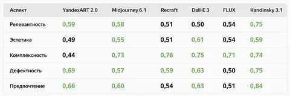

Сегодня мы зарелизили нашу лучшую модель text-to-image генерации YandexART 2.5. Дополнительно приятно, что некоторые её создатели были авторами разборов в этом канале.
Как удалось добиться нужного качества:
— Увеличили размер латентного пространства. Теперь автокодировщик VAE работает с 16 каналами (вместо четырёх, как раньше).
— Применили технологию «супирования». Когда независимо файнтюним несколько моделей и усредняем их веса.
— Улучшили датасет для обучения, который включает пары «текст-картинка». Теперь для каждой картинки разными моделями генерируется несколько описаний, а также берётся текст, описывающий это изображение в интернете. Метамодель выбирает лучший из предложенных текстов — именно он идёт в обучение.
— Увеличили и сам датасет. Теперь его размер приблизился к 1 млрд пар картинок и описаний к ним.
— Ускорили модель с помощью multistep consistency distillation. Благодаря этому подходу генерация стала в 9 раз быстрее.
Всё это и многое другое позволило переиграть Midjourney 6.1 и некоторые SOTA-модели. В таблице показана доля побед YandexART 2.5 Pro, а зелёным отмечены победы нашей модели в сравнении с другими.
Модель уже в Шедевруме — пробуйте первыми, делитесь впечатлениями и результатами.
CV Time
